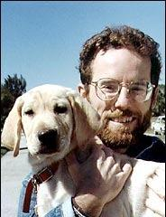
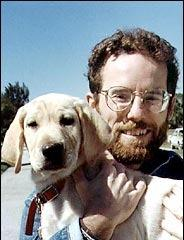

Sobre o Livro
"Marley & Eu: A Vida e o Amor ao Lado do Pior Cão do Mundo" é um livro escrito por John Grogan e publicado em 2005. A obra é uma autobiografia que narra a vida do autor e sua família ao lado de Marley, um Labrador Retriever travesso e cheio de energia. O livro é um emocionante relato das lições de amor e paciência aprendidas através da convivência com Marley, explorando temas de lealdade, desafio e o verdadeiro espírito familiar.
Sinopse do Livro
A história começa quando John e sua esposa Jenny decidem adotar um filhote de Labrador para preparar-se para a eventual responsabilidade de criar filhos. Marley, o cão que eles escolhem, rapidamente se torna parte da família, trazendo tanto alegria quanto caos. Com o tempo, Marley ensina lições valiosas sobre amor incondicional e o impacto profundo que um animal de estimação pode ter na vida de uma família.
Adaptação Cinematográfica
O sucesso do livro levou à adaptação cinematográfica, lançada em 2008, dirigida por David Frankel. O filme, estrelado por Owen Wilson e Jennifer Aniston, captura a essência do livro, apresentando de forma comovente e divertida as aventuras e desafios de viver com Marley. A atuação de ambos os atores principais, juntamente com a direção sensível, fez do filme um sucesso entre os espectadores e críticos.
Elenco Principal
- Owen Wilson como John Grogan
- Jennifer Aniston como Jenny Grogan
- Eric Dane como Sebastian
- Alan Arkin como Arnie Klein
Trilha Sonora
A trilha sonora do filme, composta por Theodore Shapiro, complementa perfeitamente a narrativa emocional, proporcionando uma camada adicional de profundidade às cenas e enfatizando os altos e baixos da vida com Marley.
Impacto e Legado
Tanto o livro quanto o filme "Marley & Eu" tocaram o coração de milhões de pessoas ao redor do mundo. Eles não apenas destacam a importância dos animais de estimação em nossas vidas, mas também celebram as lições de amor, paciência e lealdade que eles nos ensinam. Marley se tornou um ícone para todos os amantes de cães, lembrando-nos das alegrias e desafios de ter um amigo peludo.
Imagens
 
